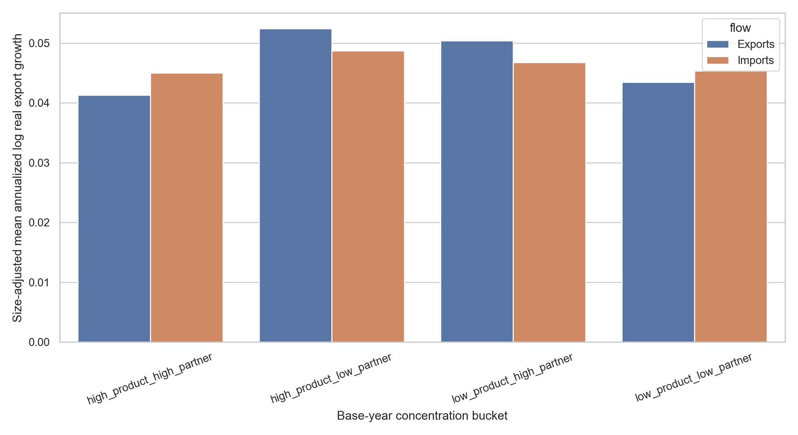
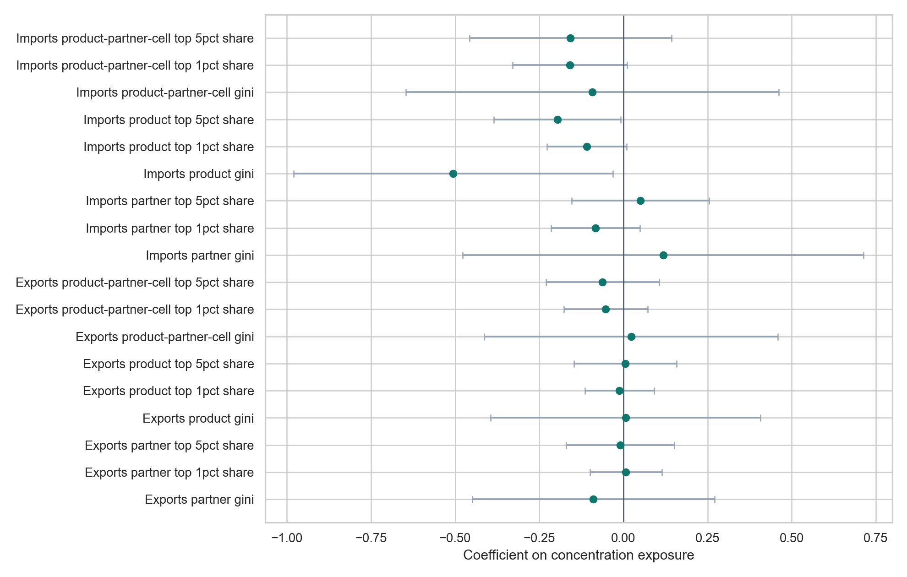

Future growth
Future Export Growth From Trade Concentration
This rd2-only page asks whether base-year import or export concentration predicts later real merchandise export growth. The results are descriptive and predictive, not causal.
Economist Council Takeaways
Advisor-mode council read using identification, econometrics, trade/spatial, political-economy, macro-GE, and writing perspectives. The council treats the size-control rerun as the decisive page update.
Best reading
The credible headline is that base concentration does not robustly forecast faster future export growth once initial export scale and macro size are made explicit. The raw bucket spread is still useful, but as a diagnostic for scale effects.
Best objection
Size controls change the effective sample and may absorb development-stage differences. The table therefore reports both raw and size-adjusted observations, and the regression rows remain the cleaner comparison.
New mechanism tests
The page now bins by base real exports, drops low-base observations, checks dollar and asinh outcomes, merges Exercise 12 extensive-margin channels, and reports leave-one-country-out influence.
What to emphasize
Lead with the size-adjusted and fixed-effect results. De-emphasize any claim that high concentration itself predicts growth unless a separate identification design is added.
What survives after size controls?
This panel separates denominator mechanics from extensive-margin evidence. It keeps the claim descriptive: the test is whether the high-product/low-partner bucket still looks different after base size, low-base exclusions, entry channels, and commodity controls.
Reading: if the raw gap shrinks in the size-adjusted, within-bin, and low-base-excluded rows, base size is doing much of the work. Extensive-margin rows are still useful if new-product, new-partner, or new-cell shares remain elevated, but that supports a market-discovery interpretation rather than a causal concentration-growth claim.
Mechanism Summary
| Test | Estimate | p-value | BH q | Obs. | Interpretation |
|---|---|---|---|---|---|
| Raw 5-year export bucket gap | 4.0% | n/a | n/a | 1,572 | High-product/low-partner minus low-product/low-partner before size controls. |
| Size-adjusted bucket gap | 0.9% | n/a | n/a | 1,322 | Same comparison after residualizing on initial exports and macro size controls. |
| Within-size-bin gap | 0.0% | n/a | n/a | 1,572 | Equal average of bucket gaps inside base-export-size quintiles. |
| Bottom 10% excluded | 0.6% | 0.670 | 0.969 | 1,217 | Country/year FE bucket coefficient after excluding the lowest base-export decile. |
| Bottom 25% excluded | -0.6% | 0.634 | 0.634 | 1,039 | Country/year FE bucket coefficient after excluding the lowest base-export quartile. |
| New-partner channel gap | 2.4% | 0.085 | 0.255 | 1,351 | Gross-positive growth share from new partners for existing products. |
| New product-partner cell gap | 10.9% | n/a | n/a | 1,605 | Gross-positive growth share from new cells where product and partner both already existed. |
| Net-new product channel gap | 3.6% | 0.058 | 0.315 | 1,351 | Gross-positive growth share from net-new products. |
| Partner-count growth gap | 1.4% | n/a | n/a | 1,615 | Annualized log change in active partners. |
| Product-count growth gap | 2.0% | n/a | n/a | 1,605 | Annualized log change in active products. |
| Prior-growth placebo | -1.1% | 0.510 | 0.782 | 1,549 | Whether the bucket also predicts already-realized pre-period growth. |
| Primary-share control | 0.6% | 0.651 | 0.781 | 1,322 | Bucket coefficient after controlling for broad primary-product export share. |
| Leave-one-country-out range | 1.8% | n/a | n/a | 60 | Range of high-product/low-partner coefficients when omitting one reporter at a time: 0.0041 to 0.0219. |
Base-Size Bin Means
| Base-size bin | Bucket | Obs. | Countries | Raw mean growth | Size-adjusted mean | Asinh-change mean | Median base real exports |
|---|---|---|---|---|---|---|---|
| Q1 | High product, high partner | 103 | 17 | 5.3% | 1.7% | 4.4% | $1.8B |
| Q1 | High product, low partner | 173 | 22 | 11.0% | 6.8% | 8.3% | $1.4B |
| Q1 | Low product, high partner | 8 | 4 | 3.0% | 2.3% | 2.9% | $2.7B |
| Q1 | Low product, low partner | 16 | 4 | 10.6% | 7.6% | 6.9% | $670.9M |
| Q2 | High product, high partner | 122 | 17 | 5.1% | 3.4% | 5.0% | $7.8B |
| Q2 | High product, low partner | 114 | 17 | 6.4% | 4.8% | 6.3% | $10.2B |
| Q2 | Low product, high partner | 39 | 9 | 7.2% | 6.1% | 7.1% | $14.6B |
| Q2 | Low product, low partner | 44 | 9 | 1.1% | 1.3% | 1.1% | $17.3B |
| Q3 | High product, high partner | 67 | 8 | 4.2% | 5.9% | 4.2% | $69.5B |
| Q3 | High product, low partner | 50 | 10 | 2.5% | 1.9% | 2.5% | $50.7B |
| Q3 | Low product, high partner | 103 | 9 | 5.8% | 6.2% | 5.8% | $75.0B |
| Q3 | Low product, low partner | 94 | 12 | 4.9% | 4.5% | 4.9% | $80.9B |
| Q4 | High product, high partner | 89 | 8 | 4.3% | 5.9% | 4.3% | $210.5B |
| Q4 | High product, low partner | 45 | 4 | 6.4% | 5.4% | 6.4% | $217.6B |
| Q4 | Low product, high partner | 102 | 13 | 4.1% | 5.8% | 4.1% | $179.9B |
| Q4 | Low product, low partner | 80 | 11 | 4.7% | 5.3% | 4.7% | $213.0B |
| Q5 | High product, high partner | 15 | 4 | 2.8% | 5.8% | 2.8% | $502.6B |
| Q5 | High product, low partner | 9 | 2 | -2.4% | 2.5% | -2.4% | $530.9B |
| Q5 | Low product, high partner | 139 | 11 | 2.9% | 3.4% | 2.9% | $449.0B |
| Q5 | Low product, low partner | 160 | 9 | 2.6% | 4.3% | 2.6% | $583.4B |
Base-Size, Placebo, and Commodity Checks
| Check | Outcome | Bucket term | Coef. | SE | p-value | BH q | Obs. | Countries | Status |
|---|---|---|---|---|---|---|---|---|---|
| Asinh-change outcome | annualized_asinh_real_export_change | High product, low partner | 0.012 | 0.015 | 0.435 | 0.696 | 1,322 | 60 | ok |
| Dollar-change outcome | annualized_real_export_change_constant_2015_usd | High product, low partner | -3440648720.213 | 1895771574.481 | 0.075 | 0.149 | 1,322 | 60 | ok |
| Base-size-bin FE | annualized_real_export_growth_log | High product, low partner | 0.013 | 0.013 | 0.316 | 0.801 | 1,322 | 60 | ok |
| Drop top oil-share quartile | annualized_real_export_growth_log | High product, low partner | 0.022 | 0.017 | 0.196 | 0.674 | 1,000 | 52 | ok |
| Income-group-year FE | annualized_real_export_growth_log | High product, low partner | 0.014 | 0.011 | 0.195 | 0.586 | 1,322 | 60 | ok |
| Broad primary-share control | annualized_real_export_growth_log | High product, low partner | 0.006 | 0.013 | 0.651 | 0.781 | 1,322 | 60 | ok |
| Drop bottom 10% base | annualized_real_export_growth_log | High product, low partner | 0.006 | 0.014 | 0.670 | 0.969 | 1,217 | 58 | ok |
| Drop bottom 25% base | annualized_real_export_growth_log | High product, low partner | -0.006 | 0.013 | 0.634 | 0.634 | 1,039 | 46 | ok |
| Prior-growth placebo | prior_export_growth_control | High product, low partner | -0.011 | 0.017 | 0.510 | 0.782 | 1,549 | 60 | ok |
Extensive-Margin Channel Regressions
| Channel | Outcome | Bucket term | Coef. | SE | p-value | BH q | Obs. | Countries | Status |
|---|---|---|---|---|---|---|---|---|---|
| Destination-diversification channel | New-partner gross share | High product, low partner | 0.023 | 0.013 | 0.085 | 0.255 | 1,351 | 60 | ok |
| Continuing-cell growth channel | Existing-cell growth gross share | High product, low partner | 0.030 | 0.026 | 0.258 | 0.487 | 1,351 | 60 | ok |
| Least-traded product channel | Least-traded product gross share | High product, low partner | 0.034 | 0.021 | 0.118 | 0.177 | 1,351 | 60 | ok |
| Low-base product channel | Low-base product gross share | High product, low partner | 0.005 | 0.007 | 0.493 | 0.516 | 1,351 | 60 | ok |
| Partner active-count growth | Partner active-count growth | High product, low partner | 0.007 | 0.003 | 0.021 | 0.124 | 1,352 | 60 | ok |
| Product active-count growth | Product active-count growth | High product, low partner | 0.015 | 0.010 | 0.133 | 0.368 | 1,351 | 60 | ok |
| Product-discovery channel | Net-new product gross share | High product, low partner | -0.048 | 0.025 | 0.058 | 0.315 | 1,351 | 60 | ok |
| Product-partner entry channel | New cell gross share | High product, low partner | -0.005 | 0.017 | 0.761 | 0.914 | 1,351 | 60 | ok |
| Strict-new-product channel | Strict-new product gross share | High product, low partner | -0.061 | 0.027 | 0.031 | 0.188 | 1,351 | 60 | ok |
Mechanism Diagnostics
| Diagnostic | Value |
|---|---|
| mechanism_panel_rows | 7690 |
| mechanism_panel_countries | 60 |
| duplicate_mechanism_panel_keys | 0 |
| exercise_12_channel_rows | 2913 |
| exercise_12_validation_status | ok |
| exercise_12_product_hs6_999999_rule | excluded before product-dependent aggregation; validation reports 0 rows after filters |
| exercise_12_partner_code_0_rule | World partner excluded before product-partner channel construction |
| primary_share_control_source | data/processed/samples/rd2_countries/country_size_effect_panel.parquet |
| base_size_models_ok | 292 |
| mechanism_models_ok | 360 |
| leave_one_country_out_rows | 60 |
| horizon_5_mechanism_rows | 3845 |
| horizon_5_exercise_12_channel_matches | 3210 |
| horizon_10_mechanism_rows | 3845 |
| horizon_10_exercise_12_channel_matches | 2616 |
Future growth
Concentration predicts later export growth
- Question
- Do base-year import/export concentration across products, partners, and product-partner cells predict future real merchandise export growth?
- Supports yes if
- Concentration measures or high/low buckets forecast meaningfully different 1-, 5-, or 10-year annualized export growth after controls and country/year fixed effects.
- Weakens yes if
- Concentration has no stable predictive association after controls and fixed effects.
- Current answer
- Descriptive and predictive, not causal. The page extends Exercise 2 beyond export-only buckets by adding imports, product-partner-cell measures, continuous specifications, paired product/partner regressions, and robustness checks.
Reading the Test
- This is predictive panel evidence, not causal identification. Country and year fixed effects absorb country constants and global shocks, but time-varying policy, demand, and industrial-composition shocks can still confound the coefficients.
- The outcome is annualized future real merchandise export growth from Comtrade totals deflated to constant 2015 USD with the US GDP deflator:
[log(real exports_c,t+h) - log(real exports_c,t)] / h. The base export denominator therefore matches the merchandise concentration data better than World Bank goods-and-services exports. - The size-adjusted bucket columns residualize annualized growth on log initial real exports, oil share, real GDP, population, real GNI per capita, and base-year fixed effects within each exposure-flow/horizon, then add back the raw flow-horizon mean.
- Product Gini measures concentration across HS6 products, Partner Gini across destinations or sources, and Product-partner-cell Gini across HS6-by-partner cells. Product and cell measures exclude HS6 999999 before aggregation; partner totals include it by repo convention.
- In the 5-year export-exposure buckets, high-product/low-partner observations have size-adjusted mean annualized growth 5.2%, versus 4.3% for low-product/low-partner observations; the raw means are 7.7% and 3.7%.
- The largest absolute continuous coefficient is Imports Product Gini, horizon 5, coefficient -0.5056, p-value 0.0411, BH q-value 0.3456.
Main specification
gc,t,h =
β concentrationc,f,d,t
+ controlsc,t
+ country FE + year FE + εc,t,h
Unit: reporter country, base year, horizon, exposure flow, and concentration dimension. Outcome: annualized future Comtrade merchandise export growth deflated to constant 2015 USD with the US GDP deflator. Controls: log initial real merchandise exports, oil export share, log real GDP, log population, and log real GNI per capita. Inference: main rows cluster by reporter country.
Product concentration
Unevenness across active HS6 product totals. HS6 999999 means Commodities not specified, so it is excluded before aggregation.
Partner concentration
Unevenness across export destinations or import sources after products are summed into partner totals. HS6 999999 is kept by the repo's partner-total convention.
Product-partner cell concentration
Unevenness across positive HS6-by-partner cells. It is product-dependent, so HS6 999999 is excluded before aggregation.
Literature Context
The page is framed as a concentration-based companion to the export diversification and extensive-margin literature, not as a causal growth paper.
- Hummels and Klenow (2005) separate extensive and intensive export margins.
- Cadot, Carrere, and Strauss-Kahn, Brenton and Newfarmer (2007), Amurgo-Pacheco and Pierola, and Besedes and Prusa (2011) motivate product, market, and relationship-margin growth channels.
- Hausmann, Hwang, and Rodrik connect export composition to growth, while import-input work such as Benguria motivates import-side concentration as an input-supply exposure.
Cross-links: Exercise 2 is the earlier export-only bucket version; Exercise 12 decomposes where export growth comes from.
Descriptive Buckets
Countries are split each year into high/low product and partner concentration buckets by exposure flow. The table reports raw future export growth and a base-size-adjusted version that removes fitted variation from initial exports and macro size controls.
{kind=link}

{kind=link}

| Exposure flow | Horizon | Bucket | Obs. | Countries | Mean annualized growth | Median annualized growth | Size-control obs. | Size-adjusted mean growth | Size-adjusted median growth | Median base real exports |
|---|---|---|---|---|---|---|---|---|---|---|
| Exports | 5 | High product, high partner | 396 | 35 | 4.7% | 4.1% | 358 | 4.1% | 4.4% | $13.1B |
| Exports | 5 | High product, low partner | 391 | 32 | 7.7% | 6.2% | 283 | 5.2% | 4.7% | $5.2B |
| Exports | 5 | Low product, high partner | 391 | 29 | 4.4% | 3.3% | 352 | 5.0% | 5.0% | $167.8B |
| Exports | 5 | Low product, low partner | 394 | 32 | 3.7% | 2.8% | 329 | 4.3% | 4.6% | $207.4B |
| Exports | 10 | High product, high partner | 302 | 35 | 4.7% | 4.1% | 267 | 4.2% | 4.3% | $13.1B |
| Exports | 10 | High product, low partner | 336 | 32 | 7.4% | 6.3% | 237 | 4.9% | 4.1% | $5.2B |
| Exports | 10 | Low product, high partner | 337 | 29 | 4.5% | 3.8% | 298 | 5.2% | 5.1% | $167.8B |
| Exports | 10 | Low product, low partner | 300 | 32 | 3.6% | 2.8% | 243 | 4.4% | 4.3% | $207.4B |
| Imports | 5 | High product, high partner | 331 | 31 | 5.0% | 4.2% | 282 | 4.5% | 5.0% | $48.4B |
| Imports | 5 | High product, low partner | 459 | 35 | 7.4% | 6.2% | 357 | 4.9% | 5.0% | $5.4B |
| Imports | 5 | Low product, high partner | 461 | 33 | 3.9% | 2.9% | 435 | 4.7% | 4.6% | $106.3B |
| Imports | 5 | Low product, low partner | 321 | 27 | 3.9% | 3.3% | 248 | 4.5% | 4.7% | $228.9B |
| Imports | 10 | High product, high partner | 265 | 31 | 4.6% | 3.9% | 220 | 4.5% | 4.3% | $48.4B |
| Imports | 10 | High product, low partner | 377 | 35 | 7.6% | 6.4% | 284 | 4.6% | 4.4% | $5.4B |
| Imports | 10 | Low product, high partner | 378 | 33 | 3.9% | 3.3% | 352 | 4.8% | 4.7% | $106.3B |
| Imports | 10 | Low product, low partner | 255 | 27 | 3.7% | 3.0% | 189 | 4.7% | 4.7% | $228.9B |
Bucket regression rows
| Exposure flow | Horizon | Bucket term | Coef. | SE | p-value | BH q | Obs. | Countries | Status |
|---|---|---|---|---|---|---|---|---|---|
| Exports | 5 | High product, high partner | 0.002 | 0.016 | 0.917 | 0.939 | 1,322 | 60 | ok |
| Exports | 5 | High product, low partner | 0.015 | 0.014 | 0.316 | 0.768 | 1,322 | 60 | ok |
| Exports | 5 | Low product, high partner | -0.006 | 0.009 | 0.466 | 0.768 | 1,322 | 60 | ok |
| Exports | 10 | High product, high partner | 0.013 | 0.013 | 0.322 | 0.825 | 1,045 | 54 | ok |
| Exports | 10 | High product, low partner | 0.013 | 0.011 | 0.242 | 0.825 | 1,045 | 54 | ok |
| Exports | 10 | Low product, high partner | 0.004 | 0.007 | 0.518 | 0.825 | 1,045 | 54 | ok |
| Imports | 5 | High product, high partner | -0.001 | 0.012 | 0.939 | 0.939 | 1,322 | 60 | ok |
| Imports | 5 | High product, low partner | 0.007 | 0.011 | 0.512 | 0.768 | 1,322 | 60 | ok |
| Imports | 5 | Low product, high partner | -0.009 | 0.008 | 0.267 | 0.768 | 1,322 | 60 | ok |
| Imports | 10 | High product, high partner | -0.004 | 0.008 | 0.625 | 0.825 | 1,045 | 54 | ok |
| Imports | 10 | High product, low partner | -0.004 | 0.009 | 0.687 | 0.825 | 1,045 | 54 | ok |
| Imports | 10 | Low product, high partner | 0.000 | 0.005 | 0.991 | 0.991 | 1,045 | 54 | ok |
Main Continuous Models
These rows use Gini measures and country/year fixed effects. Raw p-values below 0.05 are highlighted separately from BH q-values.
| Measure | Horizon | Exposure | Coef. | SE | p-value | BH q | Obs. | Countries | Status |
|---|---|---|---|---|---|---|---|---|---|
| Exports Partner Gini | 5 | Partner Gini | -0.089 | 0.184 | 0.629 | 0.976 | 1,322 | 60 | ok |
| Exports Product Gini | 5 | Product Gini | 0.006 | 0.204 | 0.976 | 0.976 | 1,322 | 60 | ok |
| Exports Product-partner cell Gini | 5 | Product-partner cell Gini | 0.023 | 0.223 | 0.918 | 0.976 | 1,322 | 60 | ok |
| Exports Partner Gini | 10 | Partner Gini | -0.028 | 0.110 | 0.801 | 0.961 | 1,045 | 54 | ok |
| Exports Product Gini | 10 | Product Gini | 0.267 | 0.192 | 0.171 | 0.486 | 1,045 | 54 | ok |
| Exports Product-partner cell Gini | 10 | Product-partner cell Gini | 0.291 | 0.167 | 0.088 | 0.486 | 1,045 | 54 | ok |
| Imports Partner Gini | 5 | Partner Gini | 0.118 | 0.304 | 0.698 | 0.976 | 1,322 | 60 | ok |
| Imports Product Gini | 5 | Product Gini | -0.506 | 0.242 | 0.041 | 0.346 | 1,322 | 60 | ok |
| Imports Product-partner cell Gini | 5 | Product-partner cell Gini | -0.093 | 0.283 | 0.743 | 0.976 | 1,322 | 60 | ok |
| Imports Partner Gini | 10 | Partner Gini | 0.118 | 0.205 | 0.569 | 0.752 | 1,045 | 54 | ok |
| Imports Product Gini | 10 | Product Gini | -0.365 | 0.198 | 0.071 | 0.486 | 1,045 | 54 | ok |
| Imports Product-partner cell Gini | 10 | Product-partner cell Gini | -0.010 | 0.184 | 0.955 | 0.976 | 1,045 | 54 | ok |
Paired Product and Partner Models
These specifications include product concentration, partner concentration, and their interaction for the same exposure flow and metric.
| Exposure flow | Horizon | Term | Coef. | SE | p-value | BH q | Obs. | Countries | Status |
|---|---|---|---|---|---|---|---|---|---|
| Exports | 5 | Partner exposure | -3.797 | 2.773 | 0.176 | 0.422 | 1,322 | 60 | ok |
| Exports | 5 | Product exposure | -3.345 | 2.487 | 0.184 | 0.422 | 1,322 | 60 | ok |
| Exports | 5 | Product x partner | 3.889 | 2.886 | 0.183 | 0.422 | 1,322 | 60 | ok |
| Exports | 10 | Partner exposure | -2.546 | 2.805 | 0.368 | 0.985 | 1,045 | 54 | ok |
| Exports | 10 | Product exposure | -1.940 | 2.368 | 0.416 | 0.985 | 1,045 | 54 | ok |
| Exports | 10 | Product x partner | 2.586 | 2.862 | 0.370 | 0.985 | 1,045 | 54 | ok |
| Imports | 5 | Partner exposure | 4.980 | 3.253 | 0.131 | 0.422 | 1,322 | 60 | ok |
| Imports | 5 | Product exposure | 4.545 | 3.408 | 0.187 | 0.422 | 1,322 | 60 | ok |
| Imports | 5 | Product x partner | -5.527 | 3.702 | 0.141 | 0.422 | 1,322 | 60 | ok |
| Imports | 10 | Partner exposure | 0.466 | 2.967 | 0.876 | 0.985 | 1,045 | 54 | ok |
| Imports | 10 | Product exposure | 0.059 | 3.165 | 0.985 | 0.985 | 1,045 | 54 | ok |
| Imports | 10 | Product x partner | -0.453 | 3.408 | 0.895 | 0.985 | 1,045 | 54 | ok |
Robustness
Checks include oil-excluded real export growth, lagged real export growth controls, region-year fixed effects, and two-way country/year clustered standard errors. The displayed robustness rows are 5-year Gini checks; full CSVs include all horizons and metrics.
| Check | Measure | Term | Coef. | SE | p-value | BH q | Obs. | Clusters | Status |
|---|---|---|---|---|---|---|---|---|---|
| Lagged export-growth control | Exports Partner Gini | Partner Gini | 0.043 | 0.171 | 0.800 | 0.886 | 1,280 | 60 | ok |
| Lagged export-growth control | Exports Partner Gini | Lagged export growth | 0.006 | 0.018 | 0.730 | n/a | 1,280 | 60 | ok |
| Lagged export-growth control | Exports Product Gini | Lagged export growth | 0.006 | 0.018 | 0.736 | n/a | 1,280 | 60 | ok |
| Lagged export-growth control | Exports Product Gini | Product Gini | 0.058 | 0.226 | 0.799 | 0.886 | 1,280 | 60 | ok |
| Lagged export-growth control | Exports Product-partner cell Gini | Lagged export growth | 0.006 | 0.018 | 0.731 | n/a | 1,280 | 60 | ok |
| Lagged export-growth control | Exports Product-partner cell Gini | Product-partner cell Gini | 0.084 | 0.253 | 0.742 | 0.886 | 1,280 | 60 | ok |
| Lagged export-growth control | Imports Partner Gini | Partner Gini | 0.123 | 0.293 | 0.676 | 0.886 | 1,280 | 60 | ok |
| Lagged export-growth control | Imports Partner Gini | Lagged export growth | 0.005 | 0.017 | 0.756 | n/a | 1,280 | 60 | ok |
| Lagged export-growth control | Imports Product Gini | Lagged export growth | 0.006 | 0.018 | 0.760 | n/a | 1,280 | 60 | ok |
| Lagged export-growth control | Imports Product Gini | Product Gini | -0.519 | 0.256 | 0.047 | 0.506 | 1,280 | 60 | ok |
| Lagged export-growth control | Imports Product-partner cell Gini | Lagged export growth | 0.006 | 0.018 | 0.735 | n/a | 1,280 | 60 | ok |
| Lagged export-growth control | Imports Product-partner cell Gini | Product-partner cell Gini | -0.049 | 0.273 | 0.858 | 0.886 | 1,280 | 60 | ok |
| Oil-excluded export growth | Exports Partner Gini | Partner Gini | 0.051 | 0.154 | 0.742 | 0.927 | 1,322 | 60 | ok |
| Oil-excluded export growth | Exports Product Gini | Product Gini | 0.063 | 0.186 | 0.734 | 0.927 | 1,322 | 60 | ok |
| Oil-excluded export growth | Exports Product-partner cell Gini | Product-partner cell Gini | 0.082 | 0.217 | 0.706 | 0.927 | 1,322 | 60 | ok |
| Oil-excluded export growth | Imports Partner Gini | Partner Gini | -0.033 | 0.341 | 0.924 | 0.927 | 1,322 | 60 | ok |
| Oil-excluded export growth | Imports Product Gini | Product Gini | -0.487 | 0.234 | 0.042 | 0.587 | 1,322 | 60 | ok |
| Oil-excluded export growth | Imports Product-partner cell Gini | Product-partner cell Gini | -0.044 | 0.269 | 0.871 | 0.927 | 1,322 | 60 | ok |
| Region-year FE | Exports Partner Gini | Partner Gini | -0.066 | 0.245 | 0.790 | 0.863 | 1,322 | 60 | ok |
| Region-year FE | Exports Product Gini | Product Gini | 0.218 | 0.239 | 0.366 | 0.863 | 1,322 | 60 | ok |
| Region-year FE | Exports Product-partner cell Gini | Product-partner cell Gini | 0.057 | 0.222 | 0.799 | 0.863 | 1,322 | 60 | ok |
| Region-year FE | Imports Partner Gini | Partner Gini | -0.012 | 0.328 | 0.972 | 0.972 | 1,322 | 60 | ok |
| Region-year FE | Imports Product Gini | Product Gini | -0.374 | 0.292 | 0.204 | 0.863 | 1,322 | 60 | ok |
| Region-year FE | Imports Product-partner cell Gini | Product-partner cell Gini | -0.226 | 0.353 | 0.524 | 0.863 | 1,322 | 60 | ok |
| Two-way clustered SE | Exports Partner Gini | Partner Gini | -0.089 | 0.216 | 0.683 | 0.975 | 1,322 | 32 | ok |
| Two-way clustered SE | Exports Product Gini | Product Gini | 0.006 | 0.194 | 0.975 | 0.975 | 1,322 | 32 | ok |
| Two-way clustered SE | Exports Product-partner cell Gini | Product-partner cell Gini | 0.023 | 0.212 | 0.914 | 0.975 | 1,322 | 32 | ok |
| Two-way clustered SE | Imports Partner Gini | Partner Gini | 0.118 | 0.297 | 0.693 | 0.975 | 1,322 | 32 | ok |
| Two-way clustered SE | Imports Product Gini | Product Gini | -0.506 | 0.249 | 0.051 | 0.316 | 1,322 | 32 | ok |
| Two-way clustered SE | Imports Product-partner cell Gini | Product-partner cell Gini | -0.093 | 0.292 | 0.752 | 0.975 | 1,322 | 32 | ok |
Country Examples
For each exposure flow and horizon, the runner records the largest positive and negative future-growth examples. The page shows the 5-year rows.
| Exposure flow | Example type | Country | Base year | Future year | Bucket | Annualized real growth | Base real exports | Future real exports | Product Gini | Partner Gini |
|---|---|---|---|---|---|---|---|---|---|---|
| Exports | fastest_growth | Azerbaijan | 2003 | 2008 | High product, high partner | 55.6% | $3.5B | $57.2B | 0.990 | 0.904 |
| Exports | fastest_growth | Guyana | 2019 | 2024 | High product, high partner | 50.7% | $1.5B | $19.1B | 0.988 | 0.907 |
| Exports | fastest_growth | Guyana | 2017 | 2022 | High product, low partner | 47.5% | $1.9B | $20.5B | 0.989 | 0.882 |
| Exports | fastest_growth | Panama | 2004 | 2009 | High product, low partner | 47.5% | $1.2B | $12.8B | 0.934 | 0.855 |
| Exports | fastest_growth | Rwanda | 1996 | 2001 | High product, low partner | 57.3% | $15.1M | $264.5M | 0.942 | 0.768 |
| Exports | slowest_growth | Niger | 2017 | 2022 | High product, high partner | -17.6% | $923.8M | $383.6M | 0.977 | 0.917 |
| Exports | slowest_growth | Panama | 2019 | 2024 | Low product, low partner | -47.6% | $10.7B | $989.2M | 0.929 | 0.838 |
| Exports | slowest_growth | Panama | 2018 | 2023 | Low product, low partner | -27.9% | $11.9B | $2.9B | 0.933 | 0.850 |
| Exports | slowest_growth | Panama | 2017 | 2022 | Low product, low partner | -25.4% | $11.8B | $3.3B | 0.926 | 0.858 |
| Exports | slowest_growth | Panama | 2016 | 2021 | Low product, low partner | -23.2% | $11.7B | $3.7B | 0.926 | 0.845 |
| Imports | fastest_growth | Azerbaijan | 2003 | 2008 | High product, low partner | 55.6% | $3.5B | $57.2B | 0.910 | 0.858 |
| Imports | fastest_growth | Guyana | 2019 | 2024 | High product, high partner | 50.7% | $1.5B | $19.1B | 0.929 | 0.933 |
| Imports | fastest_growth | Guyana | 2017 | 2022 | High product, high partner | 47.5% | $1.9B | $20.5B | 0.894 | 0.905 |
| Imports | fastest_growth | Panama | 2004 | 2009 | High product, low partner | 47.5% | $1.2B | $12.8B | 0.876 | 0.846 |
| Imports | fastest_growth | Rwanda | 1996 | 2001 | High product, low partner | 57.3% | $15.1M | $264.5M | 0.899 | 0.854 |
| Imports | slowest_growth | Niger | 2017 | 2022 | High product, low partner | -17.6% | $923.8M | $383.6M | 0.934 | 0.883 |
| Imports | slowest_growth | Panama | 2019 | 2024 | High product, low partner | -47.6% | $10.7B | $989.2M | 0.892 | 0.867 |
| Imports | slowest_growth | Panama | 2018 | 2023 | High product, low partner | -27.9% | $11.9B | $2.9B | 0.896 | 0.858 |
| Imports | slowest_growth | Panama | 2017 | 2022 | High product, low partner | -25.4% | $11.8B | $3.3B | 0.888 | 0.852 |
| Imports | slowest_growth | Panama | 2016 | 2021 | High product, low partner | -23.2% | $11.7B | $3.7B | 0.890 | 0.847 |
Diagnostics and Downloads
The diagnostics table records rd2 coverage, duplicate-key checks, missing-control rows, and the HS6 999999 conventions used by the runner.
| Diagnostic | Value |
|---|---|
| country_sample | rd2_countries |
| start_year | 1988 |
| end_year | 2025 |
| horizons | 5,10 |
| concentration_rows | 3845 |
| panel_rows | 7690 |
| countries | 60 |
| base_years | 38 |
| export_total_rows | 1920 |
| world_bank_control_rows | 2280 |
| missing_required_rows | 2956 |
| duplicate_panel_keys | 0 |
| product_hs6_999999_rule | excluded upstream before product and product-partner aggregation |
| partner_hs6_999999_rule | included in partner totals by repo convention |
| outcome_source | Comtrade merchandise export totals deflated with the US GDP deflator to constant 2015 USD |
| control_source | World Bank constant-2015 GDP, population, and constant-2015 GNI per capita |
| size_adjusted_bucket_controls | log_initial_exports_constant_2015_usd,oil_export_share,log_gdp_constant_2015_usd,log_population,log_gni_per_capita_constant_2015_usd |
| size_adjusted_bucket_method | within flow-horizon OLS residual plus raw flow-horizon mean, with base-year fixed effects |
| base_size_bin_method | base real export percentiles and quintiles computed within exposure flow, base year, and horizon |
| alternative_outcomes | annualized_real_export_change_constant_2015_usd,annualized_asinh_real_export_change |
| mechanism_channel_source | Exercise 12 hs6_harmonized_family country-window decomposition and product-entry robustness |
| interpretation | descriptive predictive association, not causal identification |
| exports_rows | 3840 |
| exports_complete_primary_rows | 2367 |
| imports_rows | 3850 |
| imports_complete_primary_rows | 2367 |
| horizon_5_rows | 3845 |
| horizon_5_complete_primary_rows | 2644 |
| horizon_5_size_adjusted_rows | 2644 |
| horizon_10_rows | 3845 |
| horizon_10_complete_primary_rows | 2090 |
| horizon_10_size_adjusted_rows | 2090 |
Missing required controls by flow and horizon
| Exposure flow | Horizon | Rows missing required controls |
|---|---|---|
| Exports | 5 | 598 |
| Exports | 10 | 875 |
| Imports | 5 | 603 |
| Imports | 10 | 880 |
Main panel CSV
Bucket summary CSV
Country examples CSV
Bucket models CSV
Continuous models CSV
Paired models CSV
Robustness models CSV
Base-size bins CSV
Base-size sensitivity CSV
Mechanism panel CSV
Mechanism models CSV
Mechanism summary CSV
Mechanism diagnostics CSV
Influence CSV
Diagnostics CSV
Missing controls CSV
Run manifest JSON